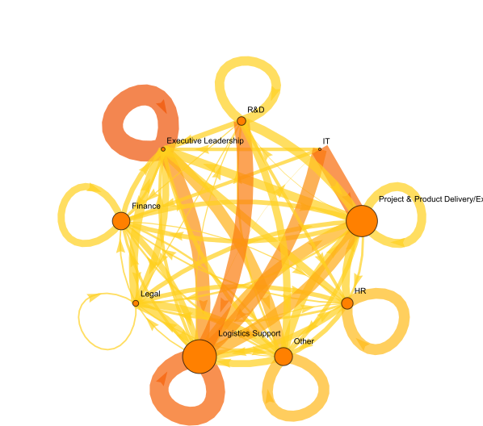

Company 2 Helpful

Company 2 Need Access
Company 5 Helpful
Company 5 Need Access
When $a \ne 0$, there are two solutions to \(ax^2 + bx + c = 0\) and they are $$x = {-b \pm \sqrt{b^2-4ac} \over 2a}.$$